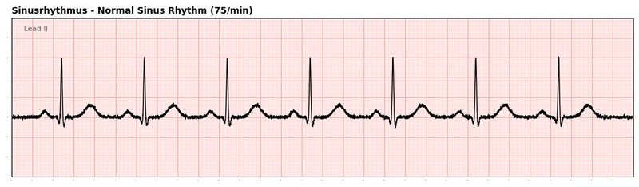
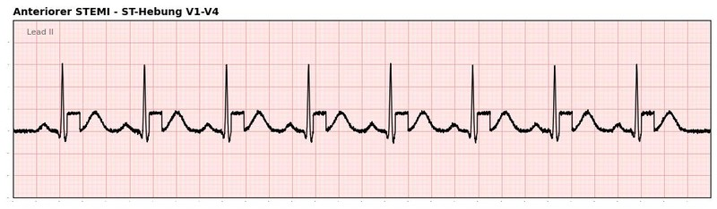
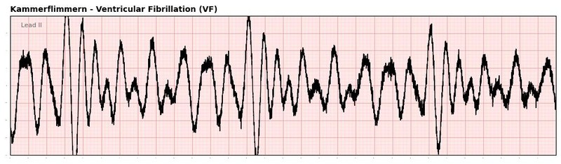

NotSan-Azubis
Prüfungsvorbereitung mit echten SAA-Fällen. Fallsimulationen mit Timer, 1.223 Quizfragen kategorisiert nach Lernfeldern – genau das, was in der staatlichen Prüfung zählt.
Ausbildung · Prüfung · Lernfortschritt
1:1 nach dem Stand der 6-Länder-Arbeitsgruppe —
offline, ohne Account, ohne Tracking.
Vier unterschiedliche Gruppen – ein gemeinsames Ziel: fundiertes Wissen nach dem aktuellsten SAA/BPR-Stand.
Prüfungsvorbereitung mit echten SAA-Fällen. Fallsimulationen mit Timer, 1.223 Quizfragen kategorisiert nach Lernfeldern – genau das, was in der staatlichen Prüfung zählt.
Pflicht-Update SAA 2025 und schnelles Nachschlagen im Dienst. Alle 29 Medikamente, 18 invasive Maßnahmen und 34 Behandlungspfade – direkt griffbereit, offline.
Einheitliches Lernmaterial nach SAA 2025, aggregierte Lernfortschrittsanalyse und Entlastung der Lehrkräfte. Klassenverwaltung, Pilotprogramm für ausgewählte Schulen geplant.
Verbandsweit einheitlicher SAA/BPR 2025-Wissensstand für aktive NotSan. Unterstützung bei der 30h-Fortbildungspflicht – Nachweis-Funktion ist in Vorbereitung.
Alle Inhalte sind aus der SAA/BPR 2025 der 6-Länder-Arbeitsgruppe abgeleitet – lückenlos, versioniert und offline verfügbar.
Kein generisches Lernportal, sondern eine App, die exakt auf die SAA/BPR 2025 der 6-Länder-Gruppe zugeschnitten ist.
Kein eigenes Curriculum. Alle Inhalte beruhen direkt auf dem Stand der 6-Länder-Arbeitsgruppe – vollständig und lückenlos.
Als PWA installierbar – funktioniert vollständig ohne Internetverbindung. Kein App-Store, keine Anmeldung, kein Tracking.
Alle Lernfortschritte bleiben lokal auf dem Gerät. Keine personenbezogenen Daten, keine Cloud – datenschutzkonform by design.
34 Behandlungspfade als klickbare Entscheidungsbäume – trainierbar, nicht nur lesbar. Passend zur Realität des Einsatzes.
26 EKG-Befunde mit realen Aufzeichnungen. Erkennen, benennen, verstehen – direkt am Bild.
153 Prüfungsfälle unter Zeitdruck – realitätsnahe Vorbereitung auf staatliche Prüfungen. Schwachstellen-Analyse danach eingeschlossen.
Echte Inhalte aus der App – kein Demo-Fake, sondern der tatsächliche Lern- und Prüfungsstand nach SAA/BPR 2025.
Ein 67-jähriger Patient klagt über retrosternalen Druckschmerz mit Ausstrahlung in den linken Arm. Der Schmerz besteht seit 45 Minuten. Welche Maßnahme hat die höchste Priorität?
Szenario: Akute Dyspnoe, weiblich, 72 Jahre
Patientin sitzt aufrecht, blass, kaltschweißig. Berichtet über plötzlich einsetzende Atemnot seit ca. 20 Minuten. Keine Schmerzen. Vorerkrankungen: art. Hypertonie, Vorhofflimmern.



Alle Inhalte beruhen 1:1 auf der SAA/BPR 2025 der 6-Länder-Arbeitsgruppe – Standardarbeitsanweisungen und Behandlungspfade im Rettungsdienst, Stand Juli 2025.
Die dominanten Fehlermuster im Rettungsdienst sind keine Wissenslücken, sondern Team-, Kommunikations- und Führungsfehler. Das neue CRM-Modul ergänzt den NotSan Trainer um die zweite Kompetenzachse – trainierbar an denselben Fällen, skalierbar über alle Wachen, dokumentiert pro Mitarbeiter.
CRM-Fortbildung pro Mitarbeiter und pro Wache nachweisbar, exportfähig für QM.
Training an den dominanten CIRS-Mustern: Rollenklarheit, Closed Loop, Speaking Up, Fixierungsfehler.
Gleiche Fälle wie im Fach-Modus, anderer Layer. Jede Wache, jede Schicht, jederzeit.
Pitch-Einstieg, Hauptmenü mit neuer CRM-Kachel, Theorie-Karten, Szenario-Training, Debrief und aggregiertes ÄLRD-Dashboard. Eigenständig durchklickbar – auch im 15-Minuten-Termin.
Konzeptstand April 2026 · Noch nicht Teil des produktiven NotSan Trainers · Begleitpapier crm_modul_konzept.md
Wir suchen aktuell Testkunden aus allen vier Zielgruppen — Azubis, aktive NotSan, Schulen und Hilfsorganisationen.
Testkunden erhalten Zugang zur App noch vor dem öffentlichen Launch.
Dein Feedback fließt direkt in die Roadmap ein – du gestaltest mit, was als nächstes kommt.
Direkter Draht zum Entwicklerteam. Fragen, Rückmeldungen und Bugs werden persönlich bearbeitet.
Schreib uns eine kurze E-Mail mit deiner Zielgruppe (Azubi, aktive NotSan, Schule, HiOrg) und was du dir von der App erhoffst. Einen persönlichen Zugang zur Live-App erhältst du nach Rückmeldung.
Wir melden uns in der Regel innerhalb von 48 Stunden.